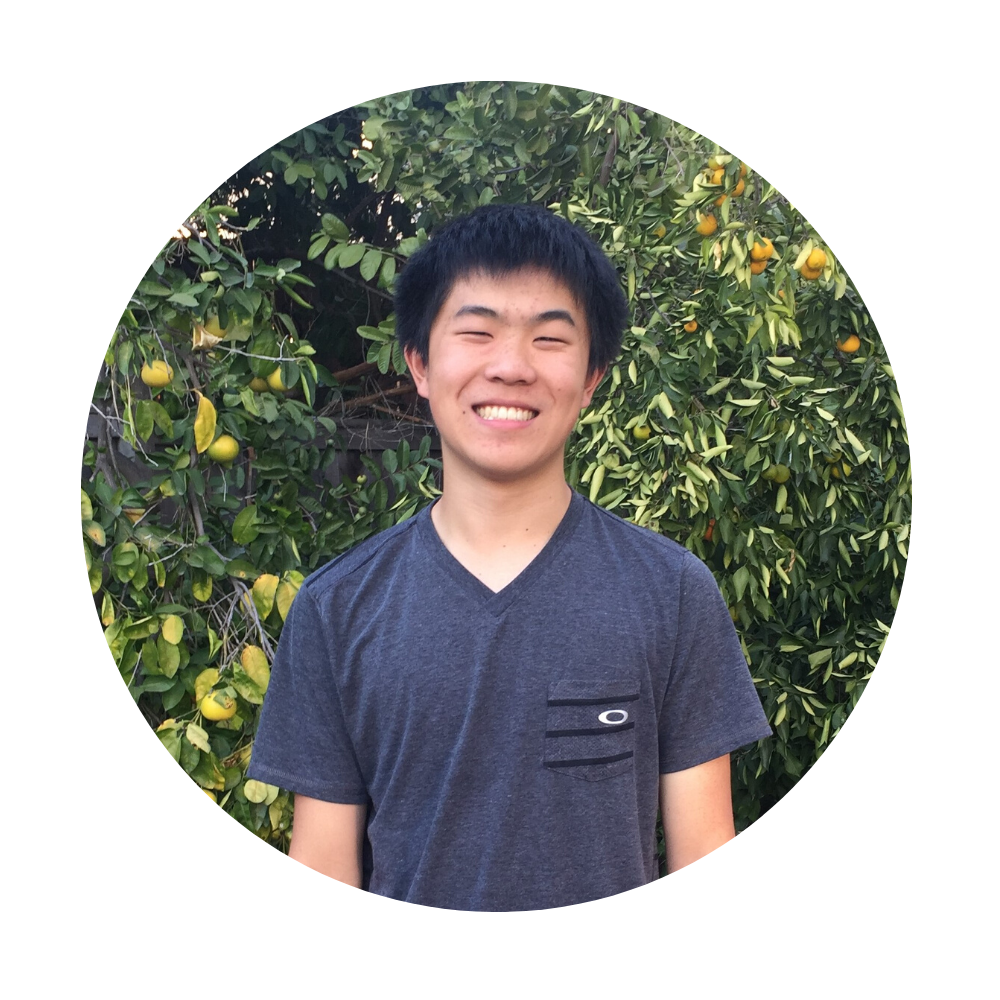
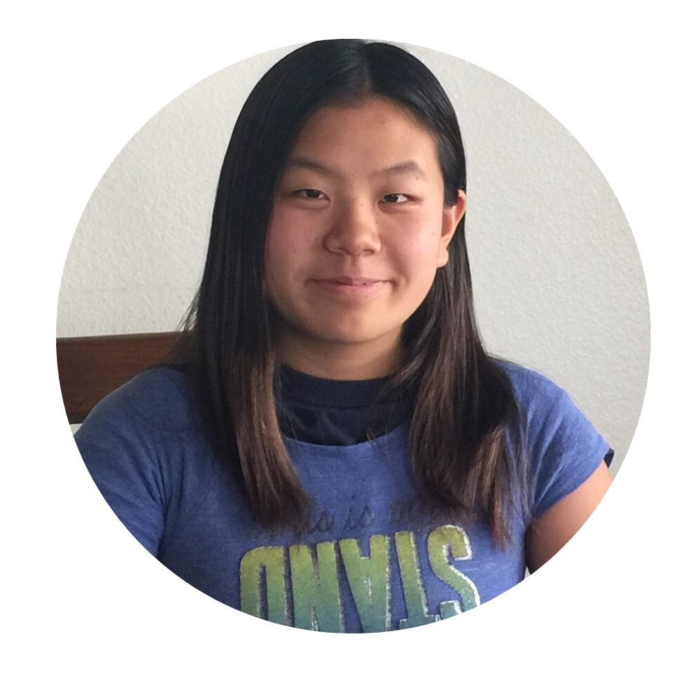
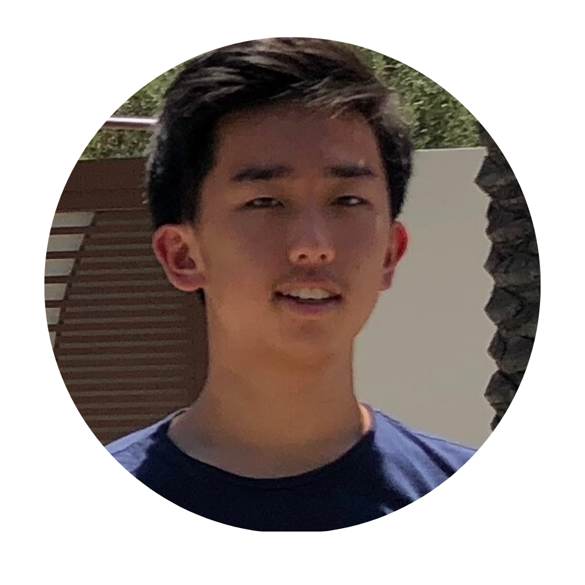
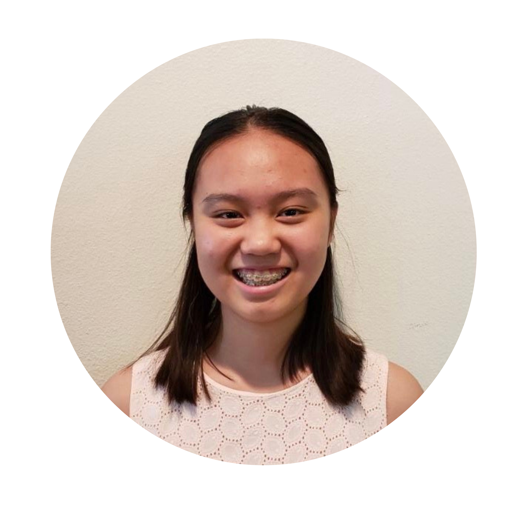
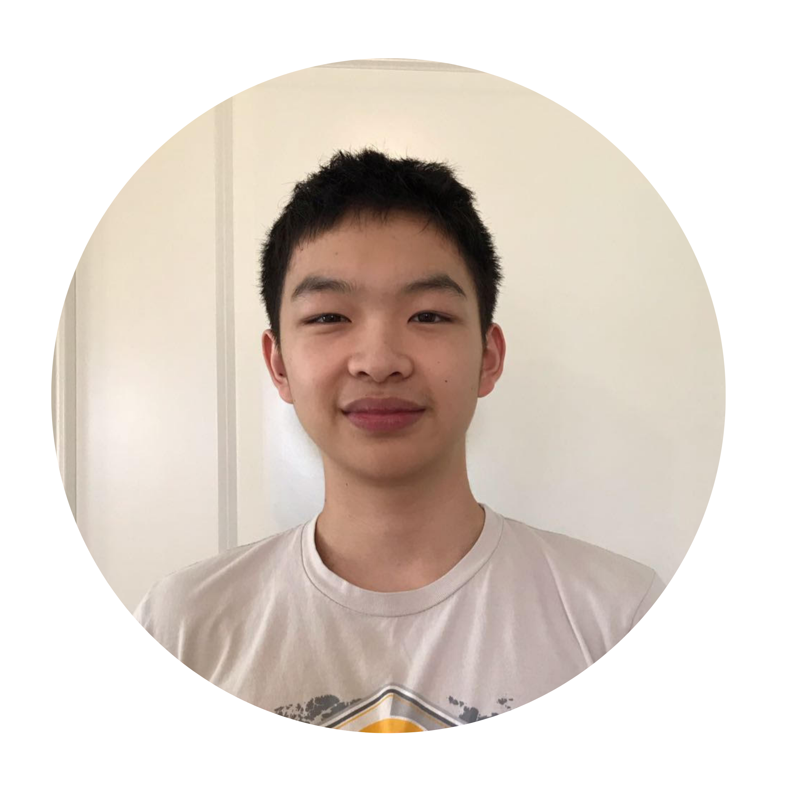

Arvin Ding (Co-founder & President)
Arvin is a senior at Portola High School in Irvine. He has been coding since 7th grade and qualified to compete in the platinum, the highest division of USA Computing Olympics since 9th grade.
Arvin has won multiple computer awards including 1st place of team award in 2018 California High School Programming Contest and 2nd place of individual award in 2019 California High School Programming Contest.

Cindy Ding (Co-founder & President)
Cindy is a sophomore at Portola High School in Irvine. She is a USA Computing Olympics Silver contestant and Grace Hopper Award Winner of 2019 California High School Programming Contest. Besides coding, Cindy also teaches math at STEAM-For-ALL and online lessons to unprivileged students in rural areas of China.

Andrew Zhang (Vice President)
Andrew is a senior at Northwood High School in Irvine. Andrew started coding since 9th grade and is avid lover of computer science. Andrew is proficient in coding in Java and Python.

Anastasia Yang (Director of Curriculum)
Anastasia is a Sophomore at Beckman High School in Irvine. She has experience in Scratch, HTML/CSS and App Design. Her perferred computer lauguage is Python and Swift. Anatacia also volunteers at Math-at-the-Library.

Felix Xie (Director of Outreach)
Felix is a Sophomore at Northwood High School in Irvine. Felix has been coding since 9th grade and loves Math and computer science. Felix preferred computer lauguage is Java.